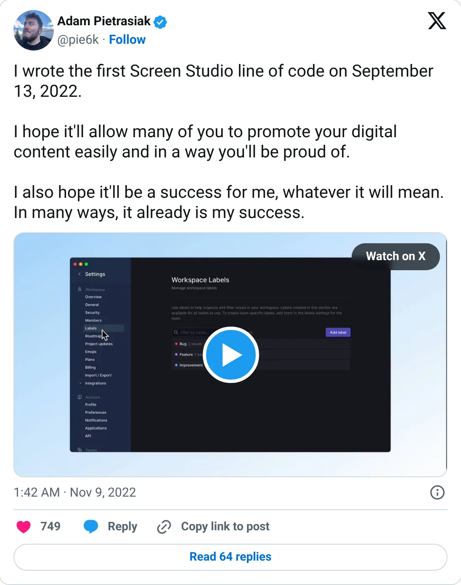
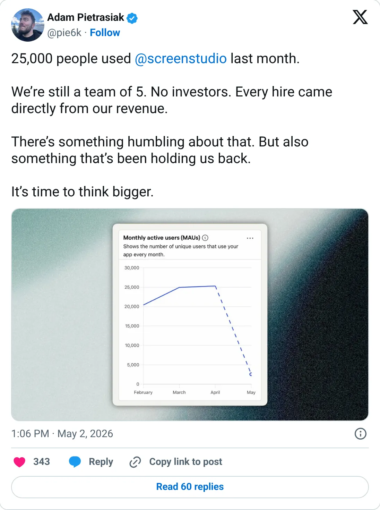

Not a pick
Screen Studio
A real-looking company with a headline you should not plan against.
$30K / month
Should you build this
The company may be real. The figure on the card is a peak, a stale year, a cash month, or an average. Screen Studio's ranked revenue is a Starter Story figure from October 23, 2024: $30K a month, 8,000 customers. The founder's own earlier comment, date approximate, was also about $30K in the first month after the November 2022 launch. He no longer shares exact numbers. By May 2026 he will say 25,000 people used it last month, still a team of five, no investors. Usage without a revenue update, and a revenue update that has not moved in the public record since launch, means we do not know the current number. The product is obviously real. The $30K is a stale outside estimate.
Cited from the captured posts, shown below: the earliest captured post (Nov 9, 2022) is the source for “"I wrote the first Screen Studio line of code on September 13, 2022"”; the latest milestone (May 2, 2026) is the source for “"25,000 people used Screen Studio last month. Still a team of 5. No investors."”.
Posts this is based on

"I wrote the first Screen Studio line of code on September 13, 2022"
Open on X

"25,000 people used Screen Studio last month. Still a team of 5. No investors."
Open on X
What the product is
Mac screen recorder that automatically adds smooth zooms, cursor animation and polish to product demos. Bootstrapped from Poland by a team of 5 with no investors; 25,000 people used it in a month (Apr 2026).
⚠ Older: the latest public revenue figure is from Oct 2024 (third-party). The founder no longer shares exact numbers.
Public trail
- •"I wrote the first Screen Studio line of code on September 13, 2022" source
- $30K~$30K in the first month after the Nov 2022 launch (founder on the Make Lemonade podcast, date approximate) source
- •"Best Screen Studio sales day ever… even Product Hunt day didn't have such revenue" source
- $30KStarter Story: $30K monthly revenue, 8,000 customers, profitable source
- •"25,000 people used Screen Studio last month. Still a team of 5. No investors." source